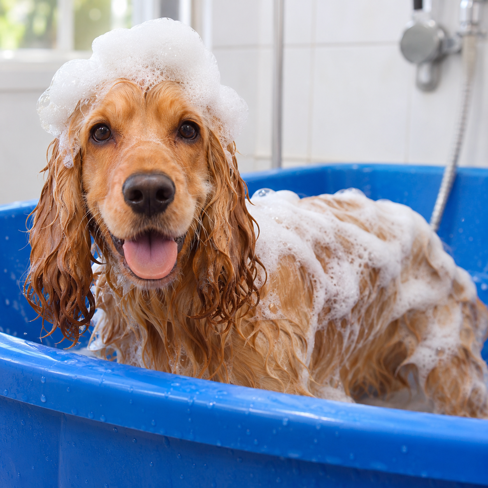
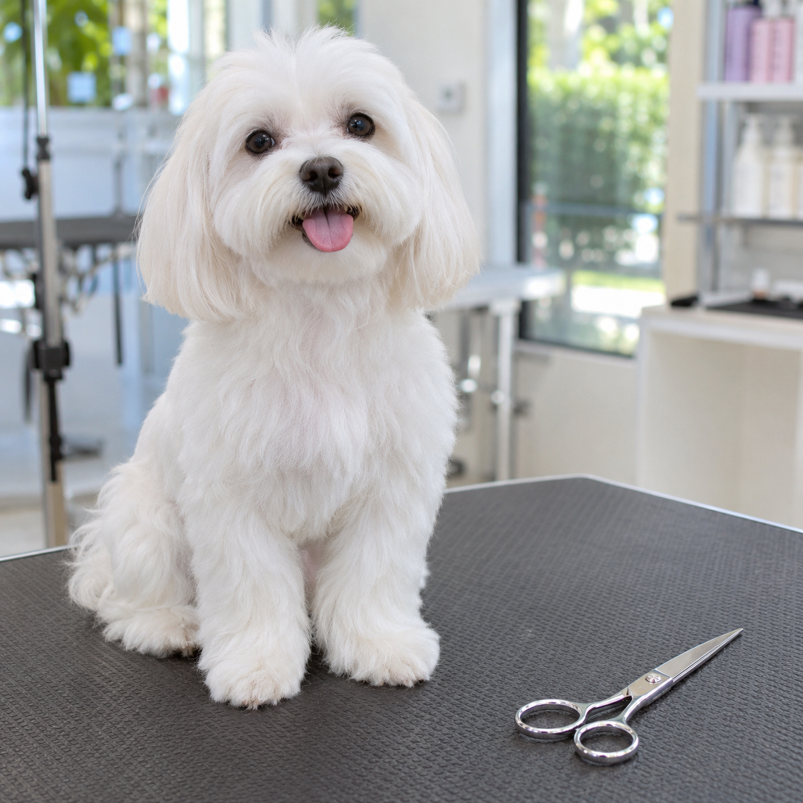
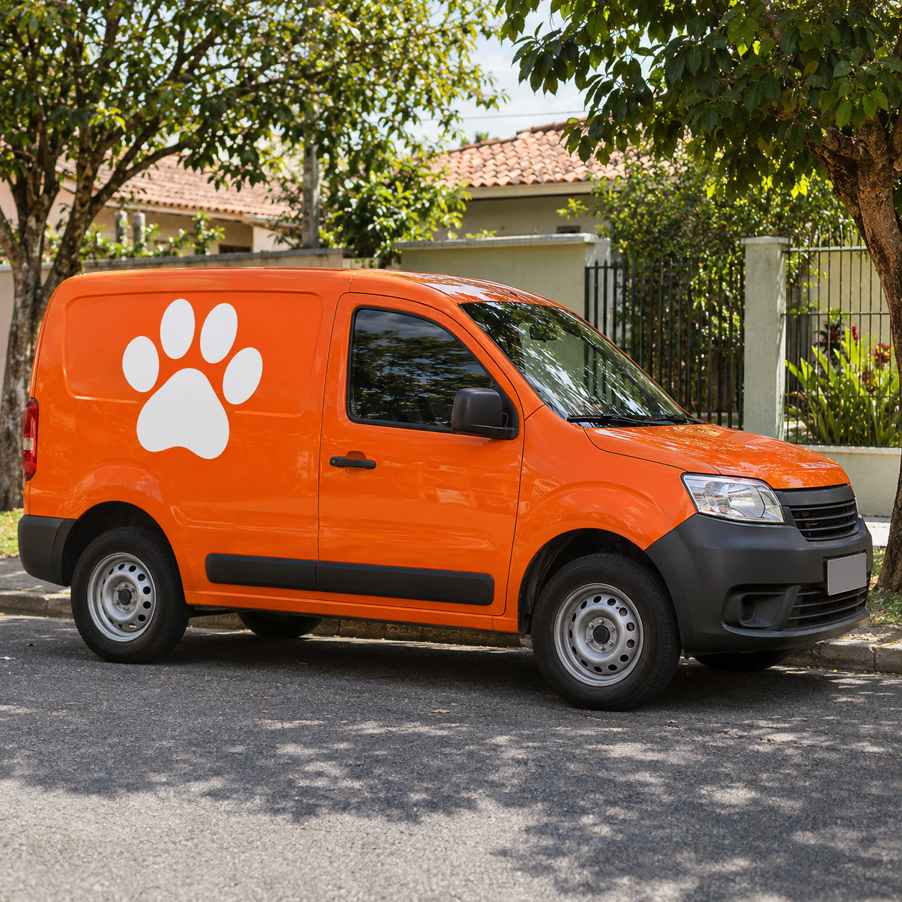

Banho

Banho com shampoo e condicionador neutros, secagem, escovação, limpeza dos ouvidos e corte de unhas.
- Sem tele-busca
- A partir de R$ 55,00
- Com tele-busca
- A partir de R$ 70,00
PetPocket Pet Shop
Tudo o que seu pet precisa em um só lugar.
Atendimento de segunda a sábado, das 8h às 18h | Telefone e WhatsApp: (51) 3320-3500
Todos os serviços podem ser contratados com ou sem tele-busca. Valores para cães e gatos de pequeno e médio porte; para pets de grande porte, consulte a loja.
Ir para: Banho | Tosa | Banho e tosa | Como funciona a tele-busca | Como agendar

Banho com shampoo e condicionador neutros, secagem, escovação, limpeza dos ouvidos e corte de unhas.

Tosa higiênica (patas, barriga e região íntima) ou tosa completa na máquina ou na tesoura, de acordo com a raça.
Pacote completo com banho e tosa no mesmo atendimento, com preço menor do que os dois serviços separados.

A tele-busca atende endereços em até 5 km da loja e acrescenta R$ 15,00 ao valor do serviço (já incluído nos valores "com tele-busca" acima).
Recomendamos agendar com pelo menos 24 horas de antecedência.